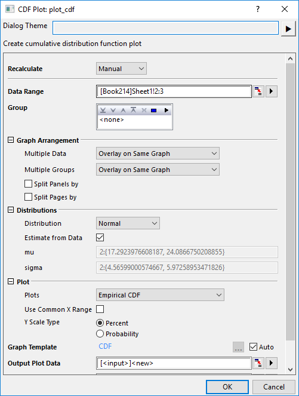

CDF-Diagramm
CDF-Plot

Datenanforderungen
Wählen Sie mindestens eine Spalte aus, um ein empirisches CDF-Diagramm und/oder ein theoretisches CDF-Diagramm zu erstellen.
Wählen Sie mehrere Daten- und Gruppenspalten aus, um die kumulative Verteilung von verschiedenen Daten/Gruppen zu vergleichen.
Diagramm erstellen
Wählen Sie die gewünschten Daten aus.
Wählen Sie im Menü Zeichnen > Statistisch: CDF-Diagramm, um den Dialog plot_cdf zu öffnen.

Bedienelemente des Dialogs
| Datenbereich |
Wählen Sie die Spalte(n) mit den Eingabedaten. |
| Gruppe |
Wählen Sie die Gruppenspalte(n). |
| Diagrammanordnung |
Legen Sie fest, wie die Zeichnungen angeordnet werden sollen.
-
Mehrere Datensätze und Mehrere Gruppen: Verwenden Sie diese zwei Optionen, um die Zeichnungen auf diese vier Arten anzuordnen:
- Alle überlagern: Sowohl Mehrere Datensätze als auch Mehrere Gruppen wählen Auf gleicher Grafik überlagern.
- Gruppen überlagern, Variablen in verschiedenen Layern: Mehrere Datensätze=Separate Layer, Mehrere Gruppen=Auf gleicher Grafik überlagern
- Variablen überlagern, Gruppen in verschiedenen Layern: Mehrere Gruppen=Separate Layer, Mehrere Daten=Auf gleicher Grafik überlagern
- Verschiedene Layer: Sowohl Mehrere Datensätze und Mehrere Gruppen wählen Separate Layer.
-
Felder teilen nach: Wenn dieses Kontrollkästchen aktiviert ist, können Sie eine andere Gruppierungsspalte auswählen, um die Grafiken in mehrere Layer aufzuteilen.
- Hinweis: Wenn Mehrere Daten und Mehrere Gruppen beide auf Separate Layer gesetzt wurden, sollte die Layerreihenfolge im Ergebnisblatt der Hierarchie von "nach Eingabedaten" →"Felder teilen nach" → "nach Gruppen“ folgen.
- Seiten teilen nach: Wenn dieses Kontrollkästchen aktiviert ist, können Sie (eine) andere Gruppierungsspalte(n) auswählen, um die Eingabedaten zu teilen und CDF-Diagramme auf verschiedenen Diagrammseiten zu erstellen. Jede Seite zeichnet nur die Spalten innerhalb der für die Seite relevanten Gruppe. Die seitenrelevanten Gruppeninformationen werden im Layertitel gezeigt, getrennt durch Komma, falls es mehrere Faktoren gibt. Das Berichtsdiagrammblatt führt alle Seiten auf.
|
| Verteilung |
- Verteilung: Legen Sie den Verteilungstyp fest, um die kumulative Verteilungswahrscheinlichkeit zu berechnen. Hier werden vier Verteilungstypen unterstützt: Normal, Lognormal, Weibull, Exponentiell und Gamma.
- Aus Daten schätzen: Den Parameterwert aus den Eingabedaten schätzen. Deaktivieren Sie es, um die Parameterwerte für jede Verteilungsfunktion unter diesem Kontrollkästchen einzugeben.
|
| Zeichnung |
- Zeichnungen: Wählen Sie, welches CDF-Diagramm Sie zeichnen möchten, empirische CDF, theoretische CDF oder beide.
- Gemeinsamen X-Bereich verwenden: Standardmäßig deaktiviert. Aktivieren Sie diese Option, um das Minimum und Maximum von X für alle Zeichnungen zu finden. Falls der X-Bereich für eine Zeichnung sehr klein ist, fügen Sie Minimum und Maximum am Ende der Zeichnung hinzu.
- Y-Skalierungstyp: Prozent (Standard, 0-100) und Wahrscheinlichkeit (0-1)
|
| Ausgabezeichnungsdaten |
Legen Sie fest, in welchem Blatt die Zeichnungsdaten ausgegeben werden. |
| Diagramme ausgeben |
Legen Sie fest, in welches Blatt die Ergebnisdiagramme ausgegeben werden. |
Vorlage
CDF.otpu (installiert im Origin-Programmordner)
Hinweise
Das CDF-Diagramm - voll ausgeschrieben das kumulative Verteilungsfunktionsdiagramm - wird verwendet, um die Verteilung von Beispieldaten zu untersuchen. Es zeigt die empirische und/oder theoretische kumulative Verteilungsfunktion der Daten. Sie können entscheiden, wie mehrere Quelldaten und ihre Gruppen angeordnet werden. Die Verteilungsinformationswerte (mu, sigma und N) für die jeweilige Gruppe der verschiedenen Daten wird automatisch in das/die Ergebnisdiagramm/e ausgegeben.